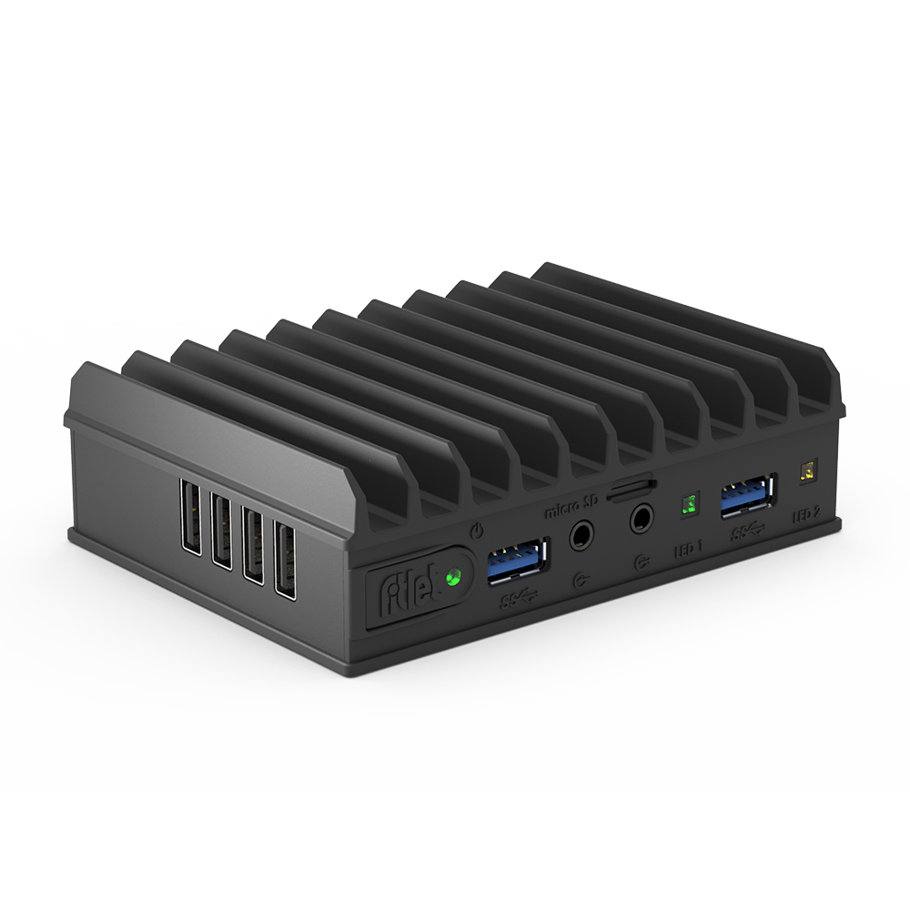

|
fc-usb/index.html
by Raymond E. Marcil marcilr@gmail.com
Created Tue 04 Oct 2022 11:23:01 AM AKDT
Last Updated: Tue 04 Oct 2022 11:23:01 AM AKDT
|
-- Ray
|
|
FC-USB FACET-Card (4x USB)
The FC-USB card looks like a great card to add to the
fitlet2.
Need to verify compatibility with SSD drive and 2x ethernet ports.

FC-USB adds 4 USB2 ports to fitlet2 for a total of 8 ports
(2x USB3 + 6x USB2, all type-A connector)
FC-USB has an M.2 key-E socket, normally used for a Wi-Fi adapter.
NOTES: Does not affect M.2 SSD (M.2 SSD 2260 can be installed with FC-M2LAN)
Links
"CompuLab IoT Gateways
are highly customizable and cost effective industrial systems
designed for Internet of Things connectivity and remote control
and monitoring applications."
https://www.compulab.com/products/iot-gateways
FC-USB FACET-Card (4x USB)
https://fit-iot.com/web/product/4x-usb-fc-usb/
fitlet2
fit-iot.com/web/products/fitlet2/
|